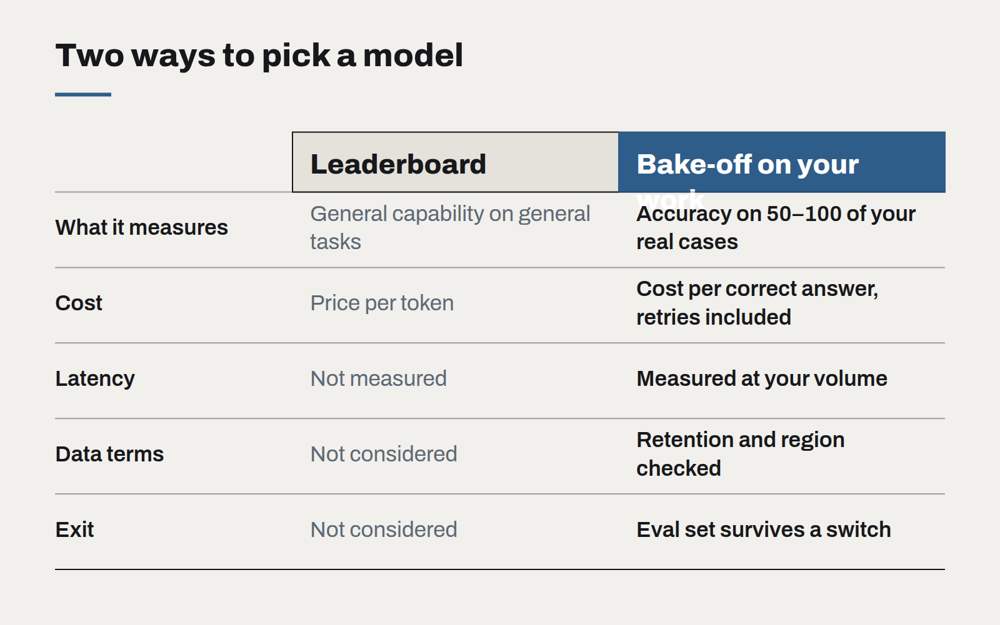

Choosing an AI model is now a procurement decision
The leaderboard tells you which model is cleverest in general. It cannot tell you which one is cheapest to be right with, on your data, under your privacy obligations.
A year ago the question most clients asked was whether to use AI at all. Now the question is which model, from whom, on what terms. That is a different kind of question. It has less to do with technology and more to do with how you buy anything else that sits inside a business process for years.
The mistake we see most often is treating model choice as a benchmark exercise. A team reads that one model scores a few points higher on a public reasoning test, picks it, and builds. Six months later the invoice is three times the estimate, the latency annoys every user, and legal has discovered that prompts are retained offshore for thirty days.
What the benchmark does not measure
Public benchmarks measure general capability on general tasks. Your work is not general. A model that is excellent at competition maths may be mediocre at reading a New Zealand tenancy agreement or reconciling a supplier statement written in three date formats.
More importantly, benchmarks say nothing about the four things that decide whether a model is viable inside a business:
- Cost per correct answer. Not cost per token. A cheaper model that needs two retries and a human check is often more expensive than a dearer one that is right first time.
- Latency at your volume. A model that answers in eight seconds is fine for an overnight batch and unusable in a phone call.
- Where the data goes. Retention, training use, and the region the request is processed in. For many of our clients the Privacy Act 2020 and their own customer contracts decide this before any engineer gets a vote.
- Exit cost. How much of your prompt engineering, evaluation data and tooling survives a switch to a different provider.

Run a bake-off on your own work
Before committing, we run a short bake-off. Take fifty to a hundred real examples of the task, with the answers a competent person would give. Run three or four candidate models against them — usually one large frontier model, one mid-sized model, and one small model you could host yourself. Score them on accuracy, cost, latency and failure mode.
The failure mode matters more than people expect. A model that says "I don't know" when it doesn't know is far easier to build around than one that answers confidently and wrongly. Two models with the same accuracy can differ enormously here.
This takes a week, not a quarter. It almost always changes the decision, and the evaluation set becomes the most valuable asset in the project: it is how you will know, next year, whether a new model is actually better for you.
Write the contract like it matters
Once the technical choice is made, treat it like any other supplier. Read the data processing terms. Ask where inference runs and whether you can pin a region. Check whether the model version you tested can be pinned, or whether it will be silently upgraded underneath you. Budget for the price to change in both directions.
And design for replacement from day one. Keep prompts in version control, keep your evaluation set current, and put a thin layer between your application and the provider's API. The model you choose this quarter is unlikely to be the model you are using in two years. The work you did to choose it should outlast it.
The right model is the cheapest one that is reliably right on your work, under terms your lawyers can sign.
Governing AI use without banning it
Staff are already using AI tools, approved or not. A short, practical policy — backed by tools people actually want to use — protects the business better than a prohibition nobody follows.
Write prompts like specifications
The prompts that hold up in production read less like clever incantations and more like a well-written brief for a new colleague. Treat them as code: versioned, reviewed and tested.
The real cost of an AI feature
The token bill is the smallest line in the budget. Evaluation, review, support and change management are where AI features actually cost money — and where the business case should look first.